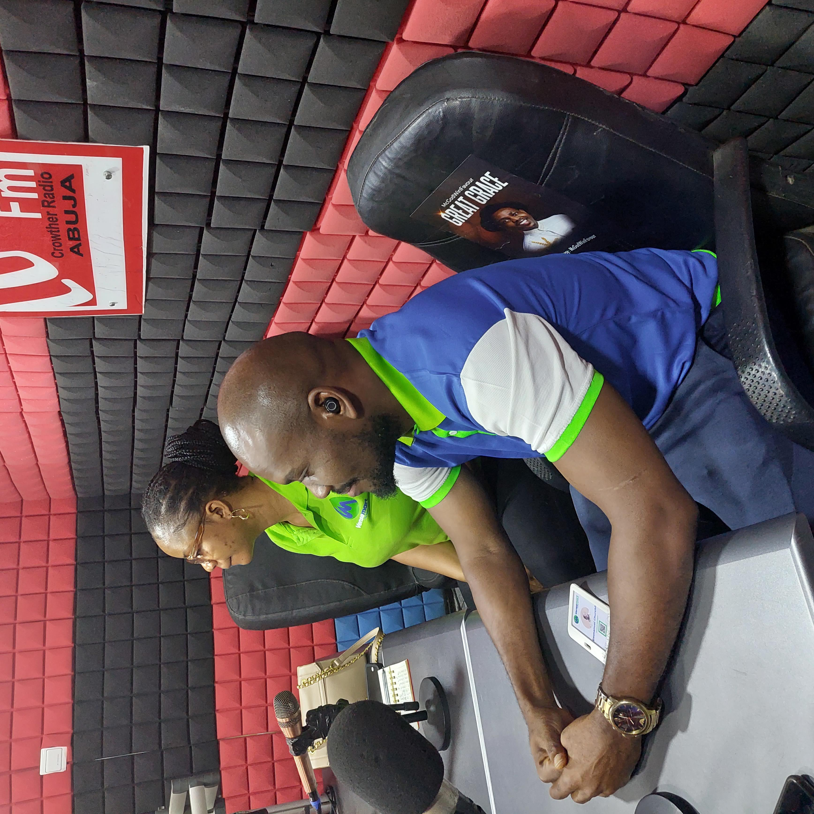
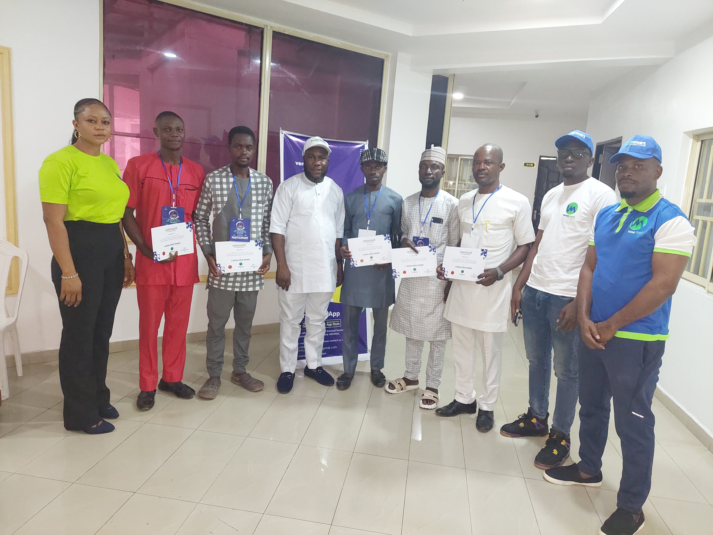
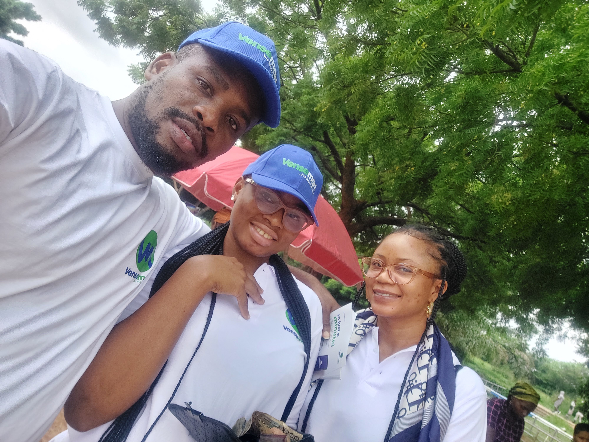
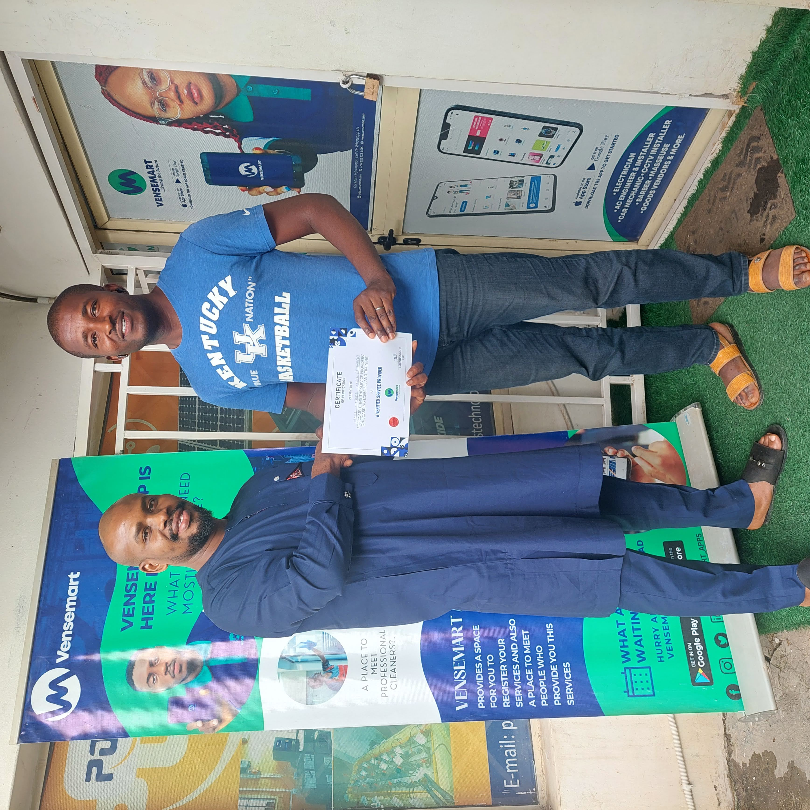
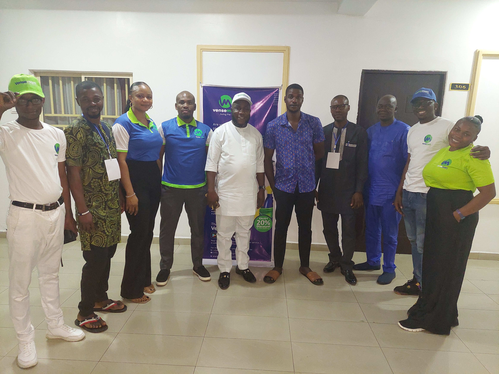
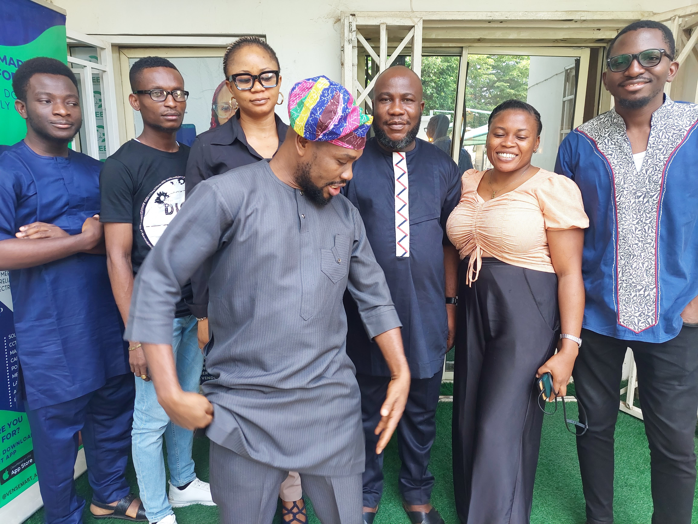
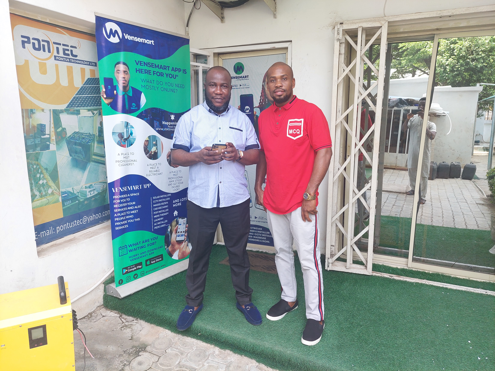

The Challenge
Before development, the team needed to understand the real problems customers and service providers faced when trying to find, connect with, and engage one another.
Initial discovery revealed gaps on both sides of the marketplace. Customers could struggle to identify reliable providers for specific needs, while artisans and service providers had difficulty reaching potential customers and managing those interactions effectively.
The product challenge was therefore broader than simply building a marketplace. We needed to understand the behaviours, trust concerns, discovery patterns and operational realities that would determine whether the product could create value for both sides.

My Approach
I worked closely with the team throughout market and user research, helping us move beyond assumptions and develop a clearer picture of the problem space.
I contributed to identifying and engaging relevant service providers and artisans, including going door-to-door to discover genuine providers and understand how they operated in their day-to-day environments.
I also helped gather customer and provider insights, document recurring pain points, compare the needs of both sides of the marketplace, and identify patterns that could influence product decisions. These findings were translated into product considerations so that feature and workflow decisions were connected to validated user problems.

My Contribution
I helped bridge the gap between research and product execution. My role involved gathering and interpreting insights, distinguishing assumptions from recurring problems, and helping the team determine which user needs deserved greater attention.
I contributed to prioritising research findings based on their relevance to the product opportunity and worked with stakeholders to connect those insights to product requirements, user experiences and potential solutions.
This meant my contribution was not limited to collecting information. I helped turn what we learned from the market into clearer product decisions, keeping development focused on solving meaningful customer and service-provider problems.

Skills Demonstrated
The project demonstrates how I connect customer discovery with product strategy and execution, particularly in an environment where the needs of multiple user groups must be considered together.
Customer Discovery
User Research
Market Research
Product Strategy
Problem Framing
Prioritisation
Stakeholder Engagement

Product thinking: The strongest outcome of the discovery work was a clearer connection between real user problems, product priorities and what the team ultimately needed to build.

The Challenge
Software and mobile products require more than defining a feature and handing it to engineering. The product team must create enough clarity for designers and engineers to understand the user problem, expected behaviour, constraints and intended outcome.
My focus was therefore on helping turn broad product needs into clearer requirements and workable experiences while keeping the user problem and business objective visible throughout delivery.
My Approach
I approached product development as a cross-functional process. I worked with stakeholders to understand the desired outcome, broke broader requirements into clearer product needs, and helped communicate those requirements to the technical team.
I used Agile ways of working to support incremental delivery, prioritisation and feedback. This helped the team focus on the most important product behaviour first rather than treating the entire product as one large delivery task.
I also paid attention to edge cases, user flows and dependencies so that requirements were not only understandable but useful during implementation.
My Contribution
I contributed to the product-development cycle by helping translate business and user needs into actionable product requirements, clarifying expected behaviour and maintaining alignment between stakeholders and the delivery team.
I supported prioritisation and refinement, worked through questions raised during implementation, and helped keep product decisions connected to the intended user experience.
This strengthened the link between product discovery and execution: what users needed informed what we prioritised, and what we prioritised informed what the team built.

Skills Demonstrated
This work demonstrates my ability to operate between users, business stakeholders and technical teams, turning product intent into delivery-ready thinking.
Product Requirements
Mobile Products
Software Products
Agile Delivery
Prioritisation
Cross-functional Collaboration
Jira
Product thinking: I focus on creating clarity between the problem, the requirement and the delivered experience so teams can move faster without losing sight of user value.
The Challenge
A product can fail even when the underlying technology works if the team solves the wrong problem. The challenge was to create enough understanding of customers and stakeholders before committing product effort to a particular solution.
This required looking beyond feature requests and asking what users were actually trying to achieve, where existing experiences were breaking down, and which problems were important enough to influence product priorities.

My Approach
I used customer and stakeholder conversations to uncover needs, pain points, expectations and recurring patterns. Rather than treating every request as an immediate feature requirement, I looked for the underlying problem and the outcome the user was trying to achieve.
I then connected those insights with business objectives and technical possibilities. This helped create a more balanced view of product opportunities: what customers valued, what the business needed, and what the team could realistically deliver.
From there, I helped turn research into clearer priorities so the team could focus its effort on problems with meaningful product value.
My Contribution
I contributed to the discovery process by helping gather customer insights, identify recurring needs and translate qualitative feedback into product considerations.
I also helped connect user evidence to prioritisation. This meant considering factors such as customer impact, relevance to the product opportunity, business objectives and the practical ability of the team to respond.
The result was a more evidence-led approach to product thinking, where customer feedback could influence what we chose to solve and why.
Skills Demonstrated
I bring a customer-centred mindset to product decisions, using research and stakeholder insight to improve problem definition, prioritisation and product direction.
Customer Research
Product Discovery
Problem Framing
Prioritisation
Stakeholder Management
Product Thinking
Outcome Focus
Product thinking: Customer-centred discovery gives the team a stronger basis for deciding what to build, what not to build and where product effort can create the most meaningful value.